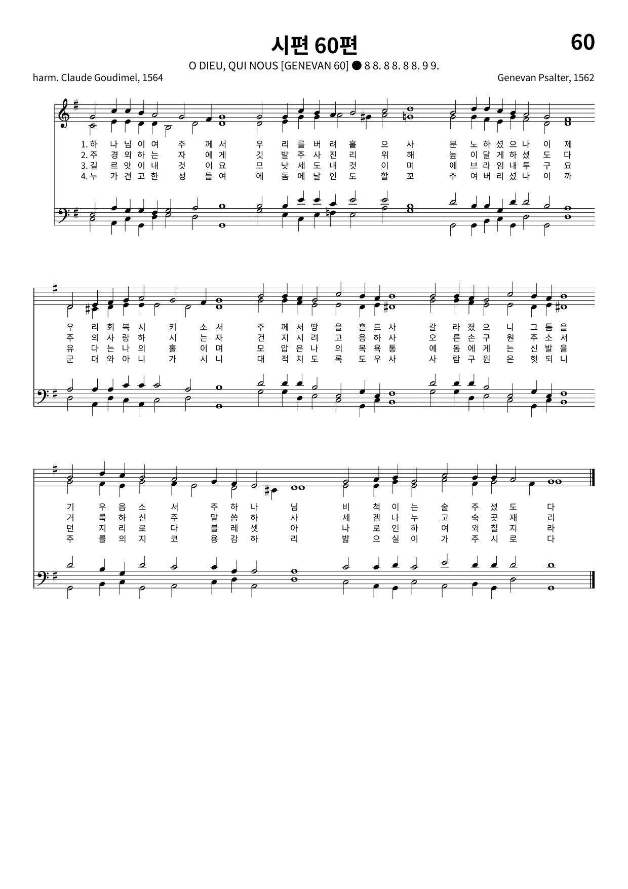

시편 60편
O DIEU, QUI NOUS [GENEVAN 60] · 8 8. 8 8. 8 8. 9 9.
곡조: Genevan Psalter, 1562 · 화성: Claude Goudimel, 1564 · 가사: 개역한글판 시편 60편 편역(AI 초벌 편역판 · 신학 감수 전) · 4절
악보 PDF MusicXML(출력용) MusicXML(반주용, 전주·반복 포함) 개역한글 시편 60편 읽기

가사
1절 (시편 1~3절)
하나님이여 주께서
우리를 버려 흩으사
분노하셨으나 이제
우리 회복시키소서
주께서 땅을 흔드사
갈라졌으니 그 틈을
기우옵소서 주 하나님
비척이는 술 주셨도다
하나님이여 주께서
우리를 버려 흩으사
분노하셨으나 이제
우리 회복시키소서
주께서 땅을 흔드사
갈라졌으니 그 틈을
기우옵소서 주 하나님
비척이는 술 주셨도다
2절 (시편 4~6절)
주 경외하는 자에게
깃발 주사 진리 위해
높이 달게 하셨도다
주의 사랑하시는 자
건지시려고 응하사
오른손 구원 주소서
거룩하신 주 말씀하사
세겜 나누고 숙곳 재리
주 경외하는 자에게
깃발 주사 진리 위해
높이 달게 하셨도다
주의 사랑하시는 자
건지시려고 응하사
오른손 구원 주소서
거룩하신 주 말씀하사
세겜 나누고 숙곳 재리
3절 (시편 7~8절)
길르앗이 내 것이요
므낫세도 내 것이며
에브라임 내 투구요
유다는 나의 홀이며
모압은 나의 목욕통
에돔에게는 신발을
던지리로다 블레셋아
나로 인하여 외칠지라
길르앗이 내 것이요
므낫세도 내 것이며
에브라임 내 투구요
유다는 나의 홀이며
모압은 나의 목욕통
에돔에게는 신발을
던지리로다 블레셋아
나로 인하여 외칠지라
4절 (시편 9~12절)
누가 견고한 성 들여
에돔에 날 인도할꼬
주여 버리셨나이까
군대와 아니 가시니
대적 치도록 도우사
사람 구원은 헛되니
주를 의지코 용감하리
밟으실 이가 주시로다
누가 견고한 성 들여
에돔에 날 인도할꼬
주여 버리셨나이까
군대와 아니 가시니
대적 치도록 도우사
사람 구원은 헛되니
주를 의지코 용감하리
밟으실 이가 주시로다